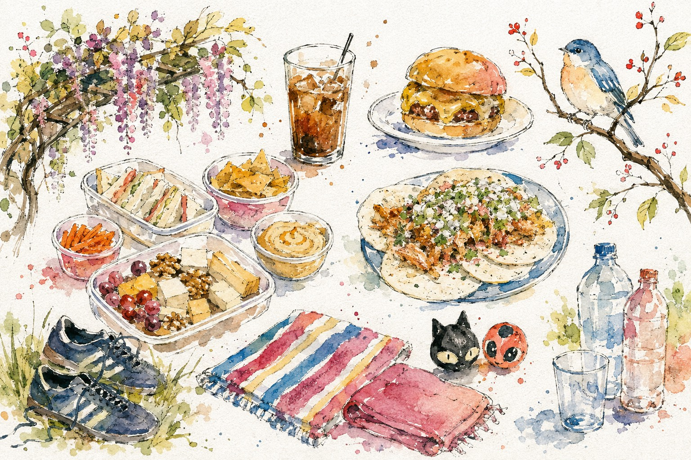

Katsu curryde proteína vegetal (abre la receta publicada en otra pestaña)
Base de arroz, salsa de curry y tofu empanado.

Alejandro
Base de arroz, salsa de curry y tofu empanado.
Arroz, curry y tofu empanado.
Aguacate, tomate, cebolla roja y limón.
Prueba con «tofu», «arroz» o «aguacate».
Propuesta 04 · Fichas, guardadas y cocina de demostración. Todo se reinicia al recargar; tu cuenta no cambia.